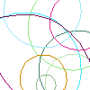
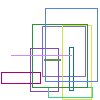
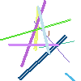
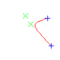
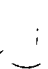
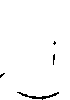
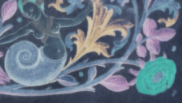
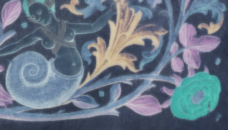

Draw
Last modified: May 17, 2022
Contents
draw_bezier
draw_bezier (FloatPoint start, FloatPoint c1, FloatPoint c2, FloatPoint end, Pixel value, float accuracy = 0.10)
| Operates on: | Image [OneBit|GreyScale|Grey16|RGB|Float|Complex] |
|---|---|
| Category: | Draw |
| Defined in: | draw.py |
| Author: | Michael Droettboom |
Draws a cubic bezier curve
Coordinates are absolute and not relative to the offset of the image. Therefore, if the image offset is (5, 5), a curve at (5, 5) will be in the upper left hand corner of the image.
- start:
- The start FloatPoint.
- c1:
- The control point associated with the start point.
- c2
- The control point associated with the end point.
- end
- The end FloatPoint.
- value:
- The pixel value to set for the curve.
- accuracy = 0.1:
- The rendering accuracy (in pixels)
Example 1: draw_bezier

draw_circle
draw_circle (FloatPoint c, float r, Pixel value, float thickness, float accuracy)
| Operates on: | Image [OneBit|GreyScale|Grey16|RGB|Float|Complex] |
|---|---|
| Category: | Draw |
| Defined in: | draw.py |
| Author: | Michael Droettboom with the help of Christoph Dalitz |
Draws a center centered at c with radius r.
Coordinates are absolute and not relative to the offset of the image. Therefore, if the image offset is (5, 5), a line at (5, 5) will be in the upper left hand corner of the image.
- c:
- The center of the circle
- r:
- The radius of the circle
- value:
- The pixel value to set for the line.
- thickness = 1.0:
- The thickness of the circle (in pixels)
- accuracy = 0.1:
The accuracy of the circle drawing
Based on the "approximating a circle with Bezier curves" approach. http://www.whizkidtech.redprince.net/bezier/circle/
Example 1: draw_circle
draw_filled_rect
draw_filled_rect (FloatPoint ul, FloatPoint lr, Pixel value)
| Operates on: | Image [OneBit|GreyScale|Grey16|RGB|Float|Complex] |
|---|---|
| Category: | Draw |
| Defined in: | draw.py |
| Author: | Michael Droettboom |
Draws a filled rectangle.
Coordinates are absolute and not relative to the offset of the image. Therefore, if the image offset is (5, 5), a rectangle at (5, 5) will be in the upper left hand corner of the image.
The coordinates can be specified either by four integers, two FloatPoints, or one Rect:
draw_filled_rect (FloatPoint(x1, y1), FloatPoint(x2, y2), value)
draw_filled_rect (Rect rect, value)
Example 1: draw_filled_rect
draw_hollow_rect
draw_hollow_rect (FloatPoint ul, FloatPoint lr, Pixel value, float thickness)
| Operates on: | Image [OneBit|GreyScale|Grey16|RGB|Float|Complex] |
|---|---|
| Category: | Draw |
| Defined in: | draw.py |
| Author: | Michael Droettboom |
Draws a hollow rectangle.
Coordinates are absolute and not relative to the offset of the image. Therefore, if the image offset is (5, 5), a rectangle at (5, 5) will be in the upper left hand corner of the image.
The coordinates can be specified either by two FloatPoints or one Rect:
draw_hollow_rect (FloatPoint(x1, y1), FloatPoint(x2, y2), value, thickness = 1.0)
draw_hollow_rect (Rect rect, value, thickness = 1.0)
- value:
- The pixel value to set for the lines.
- thickness = 1.0:
- The thickness of the outline
Example 1: draw_hollow_rect
draw_line
draw_line (FloatPoint start, FloatPoint end, Pixel value, float thickness)
| Operates on: | Image [OneBit|GreyScale|Grey16|RGB|Float|Complex] |
|---|---|
| Category: | Draw |
| Defined in: | draw.py |
| Author: | Michael Droettboom and Christoph Dalitz |
Draws a straight line between two points.
Coordinates are absolute and not relative to the offset of the image. Therefore, if the image offset is (5, 5), a line at (5, 5) will be in the upper left hand corner of the image.
- a:
- The start FloatPoint.
- b:
- The end FloatPoint.
- value:
- The pixel value to set for the line.
- thickness = 1.0:
- The thickness of the line (in pixels)
The implementation is based on the classic Bresenham algorithm, as described in J. E. Bresenham: Algorithm for computer control of a digital plotter. IBM Systems Journal 4, pp. 25-30 (1965).
Example 1: draw_line
draw_marker
draw_marker (FloatPoint location, int size = 5, Choice [+|x|hollow_square|filled_square] style = +, Pixel value)
| Operates on: | Image [OneBit|GreyScale|Grey16|RGB|Float|Complex] |
|---|---|
| Category: | Draw |
| Defined in: | draw.py |
| Author: | Michael Droettboom |
Draws a marker at a given point.
Coordinates are absolute and not relative to the offset of the image. Therefore, if the image offset is (5, 5), a marker at (5, 5) will be in the upper left hand corner of the image.
- a
- The position of the marker.
- size
- The size of the marker (number of pixels)
- style
PLUS + (0)
X + (1)
HOLLOW_SQUARE (2)
FILLED_SQUARE (3)
- value
- The pixel value to set for the line.
Example 1: draw_marker
draw_text
draw_text (FloatPoint p, str text, Pixel color, int(3, 512) size = 10, Choice [serif|sans-serif|monospace] font_family, bool italic = False, bool bold = False, Choice [left|center|right] halign)
| Operates on: | Image [OneBit|RGB] |
|---|---|
| Category: | Draw |
| Defined in: | draw.py |
| Author: | Michael Droettboom |
Draws text onto the image. The results are fairly primitive. The text is not anti-aliased, but should be adequate for marking up the image for debugging purposes.
This function relies on wxPython for font rendering. Therefore, wxPython must be installed, and it must be runnable in the current environment, for example, a connection to a display or X server must be available. This may not be the case when running over a remote terminal, for example.
- p
- The position of the text. The x component will be either at the left, center, or right of the text, depending on the value of halign. The y component specifies the top of the text.
- text
- The string to be drawn on the image. If this is an 8-bit string the string should be encoded in the default encoding for your system. If a Unicode string, the text will be rendered using a Unicode font. This requires that your wxPython version is compiled with Unicode support.
- color
The color of the text to be drawn. Note that there are some peculiarities for ONEBIT images:
If color is zero, the text will be white. If non-zero, the text will be black. It is not possible to set different values for the text.
- family
The font family to be used. For platform independence, this argument takes a general typeface style which will be mapped to an appropriate typeface on each platform.
SERIF (0)
SANS-SERIF (1)
MONOSPACE (2)
- size = 10
- The font size in pixels (i.e. not in "points")
- italic = False
- If True, the text will be italic.
- bold = False
- If True, the text will be bold.
- halign
LEFT JUSTIFIED (0): The text is left-justified to the point p.
CENTERED (1): The text is centered horizontally to the point p.
RIGHT JUSTIFIED (2): The text is right-justified to the point p.
fill
fill (Pixel value)
| Operates on: | Image [OneBit|GreyScale|Grey16|RGB|Float|Complex] |
|---|---|
| Category: | Draw |
| Defined in: | image_utilities.py |
| Author: | Michael Droettboom and Karl MacMillan |
Fills the entire image with value.
- value
- A pixel value. This value may be any value the pixel type can support.
fill_white
fill_white ()
| Operates on: | Image [OneBit|GreyScale|Grey16|Float|RGB] |
|---|---|
| Category: | Draw |
| Defined in: | image_utilities.py |
| Author: | Michael Droettboom and Karl MacMillan |
Fills the entire image with white.
flood_fill
flood_fill (Point start, Pixel color)
| Operates on: | Image [GreyScale|Float|OneBit|RGB] |
|---|---|
| Category: | Draw |
| Defined in: | draw.py |
| Author: | Michael Droettboom |
Flood fills from the given point using the given color. This is similar to the "bucket" tool found in many paint programs.
The coordinates can be specified either by two integers or one Point:
- a:
- The start Point.
- color:
- The pixel value to set for the rectangle.
Example 1: flood_fill((10, 58), 0)
 

highlight
highlight (Image [OneBit] cc, Pixel color)
| Operates on: | Image [RGB|GreyScale|OneBit] |
|---|---|
| Category: | Draw |
| Defined in: | draw.py |
| Author: | Michael Droettboom |
Highlights all pixels on an image in given color that are black in the passed connected component. The connected component can be part of a different image, it must however lie within the image region.
- cc
- A one-bit connected component from the image
- color
- A color value (RGBPixel, 0-255, or [0|1], depending on the image type) used to color the cc.
Example 1: highlight
invert
invert ()
| Operates on: | Image [OneBit|GreyScale|Grey16|RGB] |
|---|---|
| Category: | Draw |
| Defined in: | image_utilities.py |
| Author: | Michael Droettboom and Karl MacMillan |
Inverts the image.
Example 1: invert()
 

Example 2: invert()


Example 3: invert()
remove_border
remove_border ()
| Operates on: | Image [OneBit] |
|---|---|
| Category: | Draw |
| Defined in: | draw.py |
| Author: | Michael Droettboom |
This is a special case of the flood_fill algorithm that is designed to remove dark borders produced by photocopiers or flatbed scanners around the border of the image.